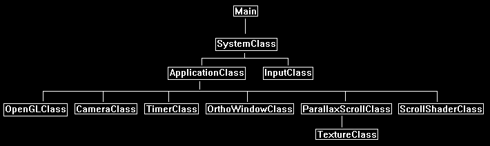

Parallax Scrolling is a technique that uses 2D scrolling images with transparency to create an interesting 3D depth effect.
It is also commonly combined with 3D rendering to achieve a number of different graphical styles, or sometimes just optimizations.
For example, the two following images are the same scene with 10 layers of parallax scrolling rendered at different points in time:


Each layer will generally move at a different speed than the other layers to create a movement effect that gives the illusion of 3D depth.
With the use of transparency each layer will have see through portions to see the layers behind it which provides that 3D depth appearance.
For this tutorial we will start with just four layers.
Layer 1:

Layer 2:

Layer 3:

Layer 4:

And the combined effect should look like the following:

Note that if you are using photoshop and a different file format such as PNG, you will need to convert the PNG to a 32-bit targa format.
So, you can copy the PNG color layer as normal to the RGB channel of the targa.
But to copy the transparency layer of the PNG in photoshop you need use the menu bar and select "Layer", then "Layer Mask", and then "From Transparency".
Then you can copy that transparency layer to the alpha channel of your targa image.
Note that the transparency layer of the PNG can have different dimensions also, so you will need to align it correctly when you paste it to the alpha layer.
We will also use a configuration file to define the layers of parallax scrolling.
For this tutorial it will have just the texture filename and the speed at which that texture will scroll at.
Note that each layer of parallax defined must be ordered from back to front, since that is order we will be rendering them.
We will call the file config.txt and it will look like the following:
config.txt
Count: 4
../Engine/data/layer_10_sky.tga 0.00
../Engine/data/layer_09_forest.tga 0.02
../Engine/data/layer_08_forest.tga 0.04
../Engine/data/layer_07_forest.tga 0.06
The config.txt file can be expanded to add other things such as translation location start, opacity, and so forth.
But like usual we will start with just the basics.
Framework
Since this is a 2D effect we will just use 2D rendering by using the OrthoWindowClass.
We will use a custom shader called ScrollShaderClass so that it can be expanded in the future for additional capabilities, but at the start will just translate 2D images across the screen.
We will also add a class called ParallaxScrollClass which will encapsulate the parallax scrolling data into a single class that takes the config.txt as input to build it.

Scroll.vs
The scroll.vs and scroll.ps shaders are just copies of the translate.vs and translate.ps shaders from tutorial 28: Texture Translation.
For this tutorial all we will be doing is translating the textures to create the scroll effect, so the translate shader code is all we need.
We will only make one change in the pixel shader to move the textures right instead of left.
Now the reason I created a separate shader called translate.vs and translate.ps is because in the future this effect needs to be expanded to do other things such as take opacity as an input.
So having its own shader makes more sense for future expansion reasons.
////////////////////////////////////////////////////////////////////////////////
// Filename: scroll.vs
////////////////////////////////////////////////////////////////////////////////
#version 400
/////////////////////
// INPUT VARIABLES //
/////////////////////
in vec3 inputPosition;
in vec2 inputTexCoord;
//////////////////////
// OUTPUT VARIABLES //
//////////////////////
out vec2 texCoord;
///////////////////////
// UNIFORM VARIABLES //
///////////////////////
uniform mat4 worldMatrix;
uniform mat4 viewMatrix;
uniform mat4 projectionMatrix;
////////////////////////////////////////////////////////////////////////////////
// Vertex Shader
////////////////////////////////////////////////////////////////////////////////
void main(void)
{
// Calculate the position of the vertex against the world, view, and projection matrices.
gl_Position = vec4(inputPosition, 1.0f) * worldMatrix;
gl_Position = gl_Position * viewMatrix;
gl_Position = gl_Position * projectionMatrix;
// Store the texture coordinates for the pixel shader.
texCoord = inputTexCoord;
}
Scroll.ps
////////////////////////////////////////////////////////////////////////////////
// Filename: scroll.ps
////////////////////////////////////////////////////////////////////////////////
#version 400
/////////////////////
// INPUT VARIABLES //
/////////////////////
in vec2 texCoord;
//////////////////////
// OUTPUT VARIABLES //
//////////////////////
out vec4 outputColor;
///////////////////////
// UNIFORM VARIABLES //
///////////////////////
uniform sampler2D shaderTexture;
uniform float textureTranslation;
////////////////////////////////////////////////////////////////////////////////
// Pixel Shader
////////////////////////////////////////////////////////////////////////////////
void main(void)
{
vec2 texCoords1;
vec4 textureColor;
This is the only difference from the original translate shader.
We will move the texture to the right by subtracting the translation value instead of adding it.
// Make a copy of the input texture coordinates.
texCoords1 = texCoord;
// Translate the position where we sample the pixel from.
texCoords1.x -= textureTranslation;
// Sample the pixel color from the texture using the sampler at this texture coordinate location.
textureColor = textureLod(shaderTexture, texCoords1, 0);
// Return the resulting color.
outputColor = textureColor;
}
Scrollshaderclass.h
The scroll shader class is exactly the same as the translate shader class but with name changes.
////////////////////////////////////////////////////////////////////////////////
// Filename: scrollshaderclass.h
////////////////////////////////////////////////////////////////////////////////
#ifndef _SCROLLSHADERCLASS_H_
#define _SCROLLSHADERCLASS_H_
//////////////
// INCLUDES //
//////////////
#include <iostream>
using namespace std;
///////////////////////
// MY CLASS INCLUDES //
///////////////////////
#include "openglclass.h"
////////////////////////////////////////////////////////////////////////////////
// Class name: ScrollShaderClass
////////////////////////////////////////////////////////////////////////////////
class ScrollShaderClass
{
public:
ScrollShaderClass();
ScrollShaderClass(const ScrollShaderClass&);
~ScrollShaderClass();
bool Initialize(OpenGLClass*);
void Shutdown();
bool SetShaderParameters(float*, float*, float*, float);
private:
bool InitializeShader(char*, char*);
void ShutdownShader();
char* LoadShaderSourceFile(char*);
void OutputShaderErrorMessage(unsigned int, char*);
void OutputLinkerErrorMessage(unsigned int);
private:
OpenGLClass* m_OpenGLPtr;
unsigned int m_vertexShader;
unsigned int m_fragmentShader;
unsigned int m_shaderProgram;
};
#endif
Scrollshaderclass.cpp
////////////////////////////////////////////////////////////////////////////////
// Filename: scrollshaderclass.cpp
////////////////////////////////////////////////////////////////////////////////
#include "scrollshaderclass.h"
ScrollShaderClass::ScrollShaderClass()
{
m_OpenGLPtr = 0;
}
ScrollShaderClass::ScrollShaderClass(const ScrollShaderClass& other)
{
}
ScrollShaderClass::~ScrollShaderClass()
{
}
bool ScrollShaderClass::Initialize(OpenGLClass* OpenGL)
{
char vsFilename[128];
char psFilename[128];
bool result;
// Store the pointer to the OpenGL object.
m_OpenGLPtr = OpenGL;
// Set the location and names of the shader files.
strcpy(vsFilename, "../Engine/scroll.vs");
strcpy(psFilename, "../Engine/scroll.ps");
// Initialize the vertex and pixel shaders.
result = InitializeShader(vsFilename, psFilename);
if(!result)
{
return false;
}
return true;
}
void ScrollShaderClass::Shutdown()
{
// Shutdown the shader.
ShutdownShader();
// Release the pointer to the OpenGL object.
m_OpenGLPtr = 0;
return;
}
bool ScrollShaderClass::InitializeShader(char* vsFilename, char* fsFilename)
{
const char* vertexShaderBuffer;
const char* fragmentShaderBuffer;
int status;
// Load the vertex shader source file into a text buffer.
vertexShaderBuffer = LoadShaderSourceFile(vsFilename);
if(!vertexShaderBuffer)
{
return false;
}
// Load the fragment shader source file into a text buffer.
fragmentShaderBuffer = LoadShaderSourceFile(fsFilename);
if(!fragmentShaderBuffer)
{
return false;
}
// Create a vertex and fragment shader object.
m_vertexShader = m_OpenGLPtr->glCreateShader(GL_VERTEX_SHADER);
m_fragmentShader = m_OpenGLPtr->glCreateShader(GL_FRAGMENT_SHADER);
// Copy the shader source code strings into the vertex and fragment shader objects.
m_OpenGLPtr->glShaderSource(m_vertexShader, 1, &vertexShaderBuffer, NULL);
m_OpenGLPtr->glShaderSource(m_fragmentShader, 1, &fragmentShaderBuffer, NULL);
// Release the vertex and fragment shader buffers.
delete [] vertexShaderBuffer;
vertexShaderBuffer = 0;
delete [] fragmentShaderBuffer;
fragmentShaderBuffer = 0;
// Compile the shaders.
m_OpenGLPtr->glCompileShader(m_vertexShader);
m_OpenGLPtr->glCompileShader(m_fragmentShader);
// Check to see if the vertex shader compiled successfully.
m_OpenGLPtr->glGetShaderiv(m_vertexShader, GL_COMPILE_STATUS, &status);
if(status != 1)
{
// If it did not compile then write the syntax error message out to a text file for review.
OutputShaderErrorMessage(m_vertexShader, vsFilename);
return false;
}
// Check to see if the fragment shader compiled successfully.
m_OpenGLPtr->glGetShaderiv(m_fragmentShader, GL_COMPILE_STATUS, &status);
if(status != 1)
{
// If it did not compile then write the syntax error message out to a text file for review.
OutputShaderErrorMessage(m_fragmentShader, fsFilename);
return false;
}
// Create a shader program object.
m_shaderProgram = m_OpenGLPtr->glCreateProgram();
// Attach the vertex and fragment shader to the program object.
m_OpenGLPtr->glAttachShader(m_shaderProgram, m_vertexShader);
m_OpenGLPtr->glAttachShader(m_shaderProgram, m_fragmentShader);
// Bind the shader input variables.
m_OpenGLPtr->glBindAttribLocation(m_shaderProgram, 0, "inputPosition");
m_OpenGLPtr->glBindAttribLocation(m_shaderProgram, 1, "inputTexCoord");
m_OpenGLPtr->glBindAttribLocation(m_shaderProgram, 2, "inputData1");
// Link the shader program.
m_OpenGLPtr->glLinkProgram(m_shaderProgram);
// Check the status of the link.
m_OpenGLPtr->glGetProgramiv(m_shaderProgram, GL_LINK_STATUS, &status);
if(status != 1)
{
// If it did not link then write the syntax error message out to a text file for review.
OutputLinkerErrorMessage(m_shaderProgram);
return false;
}
return true;
}
void ScrollShaderClass::ShutdownShader()
{
// Detach the vertex and fragment shaders from the program.
m_OpenGLPtr->glDetachShader(m_shaderProgram, m_vertexShader);
m_OpenGLPtr->glDetachShader(m_shaderProgram, m_fragmentShader);
// Delete the vertex and fragment shaders.
m_OpenGLPtr->glDeleteShader(m_vertexShader);
m_OpenGLPtr->glDeleteShader(m_fragmentShader);
// Delete the shader program.
m_OpenGLPtr->glDeleteProgram(m_shaderProgram);
return;
}
char* ScrollShaderClass::LoadShaderSourceFile(char* filename)
{
FILE* filePtr;
char* buffer;
long fileSize, count;
int error;
// Open the shader file for reading in text modee.
filePtr = fopen(filename, "r");
if(filePtr == NULL)
{
return 0;
}
// Go to the end of the file and get the size of the file.
fseek(filePtr, 0, SEEK_END);
fileSize = ftell(filePtr);
// Initialize the buffer to read the shader source file into, adding 1 for an extra null terminator.
buffer = new char[fileSize + 1];
// Return the file pointer back to the beginning of the file.
fseek(filePtr, 0, SEEK_SET);
// Read the shader text file into the buffer.
count = fread(buffer, 1, fileSize, filePtr);
if(count != fileSize)
{
return 0;
}
// Close the file.
error = fclose(filePtr);
if(error != 0)
{
return 0;
}
// Null terminate the buffer.
buffer[fileSize] = '\0';
return buffer;
}
void ScrollShaderClass::OutputShaderErrorMessage(unsigned int shaderId, char* shaderFilename)
{
long count;
int logSize, error;
char* infoLog;
FILE* filePtr;
// Get the size of the string containing the information log for the failed shader compilation message.
m_OpenGLPtr->glGetShaderiv(shaderId, GL_INFO_LOG_LENGTH, &logSize);
// Increment the size by one to handle also the null terminator.
logSize++;
// Create a char buffer to hold the info log.
infoLog = new char[logSize];
// Now retrieve the info log.
m_OpenGLPtr->glGetShaderInfoLog(shaderId, logSize, NULL, infoLog);
// Open a text file to write the error message to.
filePtr = fopen("shader-error.txt", "w");
if(filePtr == NULL)
{
cout << "Error opening shader error message output file." << endl;
return;
}
// Write out the error message.
count = fwrite(infoLog, sizeof(char), logSize, filePtr);
if(count != logSize)
{
cout << "Error writing shader error message output file." << endl;
return;
}
// Close the file.
error = fclose(filePtr);
if(error != 0)
{
cout << "Error closing shader error message output file." << endl;
return;
}
// Notify the user to check the text file for compile errors.
cout << "Error compiling shader. Check shader-error.txt for error message. Shader filename: " << shaderFilename << endl;
return;
}
void ScrollShaderClass::OutputLinkerErrorMessage(unsigned int programId)
{
long count;
FILE* filePtr;
int logSize, error;
char* infoLog;
// Get the size of the string containing the information log for the failed shader compilation message.
m_OpenGLPtr->glGetProgramiv(programId, GL_INFO_LOG_LENGTH, &logSize);
// Increment the size by one to handle also the null terminator.
logSize++;
// Create a char buffer to hold the info log.
infoLog = new char[logSize];
// Now retrieve the info log.
m_OpenGLPtr->glGetProgramInfoLog(programId, logSize, NULL, infoLog);
// Open a file to write the error message to.
filePtr = fopen("linker-error.txt", "w");
if(filePtr == NULL)
{
cout << "Error opening linker error message output file." << endl;
return;
}
// Write out the error message.
count = fwrite(infoLog, sizeof(char), logSize, filePtr);
if(count != logSize)
{
cout << "Error writing linker error message output file." << endl;
return;
}
// Close the file.
error = fclose(filePtr);
if(error != 0)
{
cout << "Error closing linker error message output file." << endl;
return;
}
// Pop a message up on the screen to notify the user to check the text file for linker errors.
cout << "Error linking shader program. Check linker-error.txt for message." << endl;
return;
}
bool ScrollShaderClass::SetShaderParameters(float* worldMatrix, float* viewMatrix, float* projectionMatrix, float textureTranslation)
{
float tpWorldMatrix[16], tpViewMatrix[16], tpProjectionMatrix[16];
int location;
// Transpose the matrices to prepare them for the shader.
m_OpenGLPtr->MatrixTranspose(tpWorldMatrix, worldMatrix);
m_OpenGLPtr->MatrixTranspose(tpViewMatrix, viewMatrix);
m_OpenGLPtr->MatrixTranspose(tpProjectionMatrix, projectionMatrix);
// Install the shader program as part of the current rendering state.
m_OpenGLPtr->glUseProgram(m_shaderProgram);
// Set the world matrix in the vertex shader.
location = m_OpenGLPtr->glGetUniformLocation(m_shaderProgram, "worldMatrix");
if(location == -1)
{
cout << "World matrix not set." << endl;
}
m_OpenGLPtr->glUniformMatrix4fv(location, 1, false, tpWorldMatrix);
// Set the view matrix in the vertex shader.
location = m_OpenGLPtr->glGetUniformLocation(m_shaderProgram, "viewMatrix");
if(location == -1)
{
cout << "View matrix not set." << endl;
}
m_OpenGLPtr->glUniformMatrix4fv(location, 1, false, tpViewMatrix);
// Set the projection matrix in the vertex shader.
location = m_OpenGLPtr->glGetUniformLocation(m_shaderProgram, "projectionMatrix");
if(location == -1)
{
cout << "Projection matrix not set." << endl;
}
m_OpenGLPtr->glUniformMatrix4fv(location, 1, false, tpProjectionMatrix);
// Set the texture in the pixel shader to use the data from the first texture unit.
location = m_OpenGLPtr->glGetUniformLocation(m_shaderProgram, "shaderTexture");
if(location == -1)
{
cout << "Shader texture not set." << endl;
}
m_OpenGLPtr->glUniform1i(location, 0);
// Set the texture translation in the pixel shader.
location = m_OpenGLPtr->glGetUniformLocation(m_shaderProgram, "textureTranslation");
if(location == -1)
{
cout << "Texture translation not set." << endl;
}
m_OpenGLPtr->glUniform1f(location, textureTranslation);
return true;
}
Parallaxscrollclass.h
The ParallaxScrollClass is used for encapsulating the parallax rendering data into a single class.
It will use the config.txt file and build all the data we need for rendering a parallax scene.
////////////////////////////////////////////////////////////////////////////////
// Filename: parallaxscrollclass.h
////////////////////////////////////////////////////////////////////////////////
#ifndef _PARALLAXSCROLLCLASS_H_
#define _PARALLAXSCROLLCLASS_H_
//////////////
// INCLUDES //
//////////////
#include <fstream>
using namespace std;
///////////////////////
// MY CLASS INCLUDES //
///////////////////////
#include "textureclass.h"
////////////////////////////////////////////////////////////////////////////////
// Class name: ParallaxScrollClass
////////////////////////////////////////////////////////////////////////////////
class ParallaxScrollClass
{
private:
The ParallaxArrayType struct will define the data for each layer of parallax scrolling we have.
For now, we record the speed that layer moves at, and its current location for its scroll.
If we want to expand this effect then we will need to add further variables to this struct.
struct ParallaxArrayType
{
float scrollSpeed;
float textureTranslation;
};
public:
ParallaxScrollClass();
ParallaxScrollClass(const ParallaxScrollClass&);
~ParallaxScrollClass();
The class has the expected Initialize and Shutdown functions.
The Frame function will need to be called each frame to update the translated location of each layer for each frame, as well as any additional effects that might be added later on.
bool Initialize(OpenGLClass*, char*);
void Shutdown();
void Frame(float);
The following are the helper functions to return data needed for rendering the parallax class object.
int GetTextureCount();
void SetTexture(OpenGLClass*, int, unsigned int);
float GetTranslation(int);
private:
We will require arrays for both the textures for each layer, and also the ParallaxArrayType struct for each layer.
The m_textureCount will represent how many layers there actually are and will define the number of elements in both arrays.
TextureClass* m_TextureArray;
ParallaxArrayType* m_ParallaxArray;
int m_textureCount;
};
#endif
Parallaxscrollclass.cpp
////////////////////////////////////////////////////////////////////////////////
// Filename: parallaxscrollclass.cpp
////////////////////////////////////////////////////////////////////////////////
#include "parallaxscrollclass.h"
ParallaxScrollClass::ParallaxScrollClass()
{
m_TextureArray = 0;
m_ParallaxArray = 0;
}
ParallaxScrollClass::ParallaxScrollClass(const ParallaxScrollClass& other)
{
}
ParallaxScrollClass::~ParallaxScrollClass()
{
}
bool ParallaxScrollClass::Initialize(OpenGLClass* OpenGL, char* configFilename)
{
ifstream fin;
char textureFilename[256];
int i, j;
char input;
float scrollSpeed;
bool result;
First open the config.txt file and get the number of parallax layers.
// Open the file.
fin.open(configFilename);
if(!fin.good())
{
return false;
}
// Read the number of textures in the file.
fin.get(input);
while(input != ':')
{
fin.get(input);
}
fin >> m_textureCount;
// Read end of line.
fin.get(input);
fin.get(input);
// Boundary check.
if((m_textureCount < 1) || (m_textureCount > 64))
{
return false;
}
Now create the two arrays for textures and structs using the texture count as the number of elements (layers) required for each array.
// Create and initialize the texture object array.
m_TextureArray = new TextureClass[m_textureCount];
// Create and initialize the parallax struct array.
m_ParallaxArray = new ParallaxArrayType[m_textureCount];
Now loop through each layer to read the layer data and load it into the texture and struct arrays.
// Loop through each line containing a texture filename and a scroll speed.
for(i=0; i<m_textureCount; i++)
{
j=0;
fin.get(input);
// Read in the texture file name.
while(input != ' ')
{
textureFilename[j] = input;
j++;
fin.get(input);
}
textureFilename[j] = '\0';
// Read in the scroll speed.
fin >> scrollSpeed;
// Read end of line.
fin.get(input);
fin.get(input);
// Load the texture into the texture array.
result = m_TextureArray[i].Initialize(OpenGL, textureFilename, true);
if(!result)
{
return false;
}
// Store the scroll speed and initialize the translation of the texture at the start.
m_ParallaxArray[i].scrollSpeed = scrollSpeed;
m_ParallaxArray[i].textureTranslation = 0.0f;
}
// Close the file.
fin.close();
return true;
}
void ParallaxScrollClass::Shutdown()
{
int i;
// Release the parallax struct array.
if(m_ParallaxArray)
{
delete [] m_ParallaxArray;
m_ParallaxArray = 0;
}
// Release the texture object array.
if(m_TextureArray)
{
for(i=0; i<m_textureCount; i++)
{
m_TextureArray[i].Shutdown();
}
delete [] m_TextureArray;
m_TextureArray = 0;
}
return;
}
The Frame function is called each frame to update any time related information.
In the case of this tutorial, we will just be updating the translated position of each layer each frame.
void ParallaxScrollClass::Frame(float frameTime)
{
int i;
// Loop through each of the elements in the parallax struct array.
for(i=0; i<m_textureCount; i++)
{
// Increment the texture translation by the frame time each frame.
m_ParallaxArray[i].textureTranslation += frameTime * m_ParallaxArray[i].scrollSpeed;
if(m_ParallaxArray[i].textureTranslation > 1.0f)
{
m_ParallaxArray[i].textureTranslation -= 1.0f;
}
}
return;
}
These are the helper functions to return data from the two arrays that are needed for rendering.
int ParallaxScrollClass::GetTextureCount()
{
return m_textureCount;
}
void ParallaxScrollClass::SetTexture(OpenGLClass* OpenGL, int index, unsigned int textureUnit)
{
m_TextureArray[index].SetTexture(OpenGL, textureUnit);
return;
}
float ParallaxScrollClass::GetTranslation(int index)
{
return m_ParallaxArray[index].textureTranslation;
}
Openglclass.cpp
We have modified the blending function in the OpenGLClass so that the different layers will add on top of each other correctly using their transparency layers.
void OpenGLClass::EnableAlphaBlending()
{
// Enable alpha blending.
glEnable(GL_BLEND);
// Set the blending equation.
//glBlendFuncSeparate(GL_SRC_ALPHA, GL_ONE_MINUS_SRC_ALPHA, GL_ONE, GL_ZERO);
glBlendFuncSeparate(GL_ONE, GL_ONE_MINUS_SRC_ALPHA, GL_ONE, GL_ZERO);
return;
}
Applicationclass.h
////////////////////////////////////////////////////////////////////////////////
// Filename: applicationclass.h
////////////////////////////////////////////////////////////////////////////////
#ifndef _APPLICATIONCLASS_H_
#define _APPLICATIONCLASS_H_
/////////////
// GLOBALS //
/////////////
const bool FULL_SCREEN = false;
const bool VSYNC_ENABLED = true;
const float SCREEN_NEAR = 0.3f;
const float SCREEN_DEPTH = 1000.0f;
///////////////////////
// MY CLASS INCLUDES //
///////////////////////
#include "inputclass.h"
#include "openglclass.h"
#include "cameraclass.h"
#include "timerclass.h"
#include "orthowindowclass.h"
Include the two new classes here.
#include "parallaxscrollclass.h"
#include "scrollshaderclass.h"
////////////////////////////////////////////////////////////////////////////////
// Class Name: ApplicationClass
////////////////////////////////////////////////////////////////////////////////
class ApplicationClass
{
public:
ApplicationClass();
ApplicationClass(const ApplicationClass&);
~ApplicationClass();
bool Initialize(Display*, Window, int, int);
void Shutdown();
bool Frame(InputClass*);
private:
bool Render();
private:
OpenGLClass* m_OpenGL;
CameraClass* m_Camera;
TimerClass* m_Timer;
The OrthoWindowClass will be used as the 2D model to render each layer of parallax onto.
OrthoWindowClass* m_FullScreenWindow;
Create a class object for the new shader and the parallax scroll class.
ScrollShaderClass* m_ScrollShader;
ParallaxScrollClass* m_ParallaxForest;
};
#endif
Applicationclass.cpp
////////////////////////////////////////////////////////////////////////////////
// Filename: applicationclass.cpp
////////////////////////////////////////////////////////////////////////////////
#include "applicationclass.h"
ApplicationClass::ApplicationClass()
{
m_OpenGL = 0;
m_Camera = 0;
m_Timer = 0;
m_FullScreenWindow = 0;
m_ParallaxForest = 0;
m_ScrollShader = 0;
}
ApplicationClass::ApplicationClass(const ApplicationClass& other)
{
}
ApplicationClass::~ApplicationClass()
{
}
bool ApplicationClass::Initialize(Display* display, Window win, int screenWidth, int screenHeight)
{
char configFilename[256];
bool result;
// Create and initialize the OpenGL object.
m_OpenGL = new OpenGLClass;
result = m_OpenGL->Initialize(display, win, screenWidth, screenHeight, SCREEN_NEAR, SCREEN_DEPTH, VSYNC_ENABLED);
if(!result)
{
cout << "Error: Could not initialize the OpenGL object." << endl;
return false;
}
// Create and initialize the camera object.
m_Camera = new CameraClass;
m_Camera->SetPosition(0.0f, 0.0f, -10.0f);
m_Camera->Render();
m_Camera->RenderBaseViewMatrix();
// Create and initialize the timer object.
m_Timer = new TimerClass;
m_Timer->Initialize();
// Create and initialize the full screen ortho window object.
m_FullScreenWindow = new OrthoWindowClass;
result = m_FullScreenWindow->Initialize(m_OpenGL, screenWidth, screenHeight);
if(!result)
{
cout << "Error: Could not initialize the full screen ortho window object." << endl;
return false;
}
Create the parallax scroll class object here and use the config.txt file to load it.
// Create and initialize the parallax scroll forest object.
m_ParallaxForest = new ParallaxScrollClass;
// Set the file name of the config file.
strcpy(configFilename, "../Engine/data/config.txt");
result = m_ParallaxForest->Initialize(m_OpenGL, configFilename);
if(!result)
{
cout << "Error: Could not initialize the parallax forest scroll object." << endl;
return false;
}
Create the new scroll shader here.
// Create and initialize the scroll shader object.
m_ScrollShader = new ScrollShaderClass;
result = m_ScrollShader->Initialize(m_OpenGL);
if(!result)
{
cout << "Error: Could not initialize the scroll shader object." << endl;
return false;
}
return true;
}
void ApplicationClass::Shutdown()
{
// Release the scroll shader object.
if(m_ScrollShader)
{
m_ScrollShader->Shutdown();
delete m_ScrollShader;
m_ScrollShader = 0;
}
// Release the parallax scroll forest object.
if(m_ParallaxForest)
{
m_ParallaxForest->Shutdown();
delete m_ParallaxForest;
m_ParallaxForest = 0;
}
// Release the full screen ortho window object.
if(m_FullScreenWindow)
{
m_FullScreenWindow->Shutdown();
delete m_FullScreenWindow;
m_FullScreenWindow = 0;
}
// Release the timer object.
if(m_Timer)
{
delete m_Timer;
m_Timer = 0;
}
// Release the camera object.
if(m_Camera)
{
delete m_Camera;
m_Camera = 0;
}
// Release the OpenGL object.
if(m_OpenGL)
{
m_OpenGL->Shutdown();
delete m_OpenGL;
m_OpenGL = 0;
}
return;
}
bool ApplicationClass::Frame(InputClass* Input)
{
float frameTime;
bool result;
// Check if the escape key has been pressed, if so quit.
if(Input->IsEscapePressed() == true)
{
return false;
}
// Update the system stats.
m_Timer->Frame();
frameTime = m_Timer->GetTime();
Each frame we need to update the parallax scroll object so that the layers all scroll at their respective speeds.
// Do the frame processing for the parallax scroll forest object.
m_ParallaxForest->Frame(frameTime);
// Render the graphics scene.
result = Render();
if(!result)
{
return false;
}
return true;
}
bool ApplicationClass::Render()
{
float worldMatrix[16], baseViewMatrix[16], orthoMatrix[16];
int textureCount, i;
bool result;
// Clear the buffers to begin the scene.
m_OpenGL->BeginScene(0.0f, 0.0f, 0.0f, 1.0f);
// Get the world, view, and projection matrices from the opengl and camera objects.
m_OpenGL->GetWorldMatrix(worldMatrix);
m_Camera->GetBaseViewMatrix(baseViewMatrix);
m_OpenGL->GetOrthoMatrix(orthoMatrix);
We need to turn on alpha blending to enable the transparency in each layer of the parallax scroll object.
// Turn on alpha blending and disable the Z buffer.
m_OpenGL->EnableAlphaBlending();
m_OpenGL->TurnZBufferOff();
Get the number of textures from the parallax scroll object since this is the same thing as the number of layers that we will need to render.
// Get the number of textures the parallax object uses.
textureCount = m_ParallaxForest->GetTextureCount();
Loop through each layer and render it using the full screen window ortho object and the scroll shader.
// Render each of the parallax scroll textures in order using the scroll shader.
for(i=0; i<textureCount; i++)
{
// Set the scroll shader as the current shader program and set the matrices that it will use for rendering.
result = m_ScrollShader->SetShaderParameters(worldMatrix, baseViewMatrix, orthoMatrix, m_ParallaxForest->GetTranslation(i));
if(!result)
{
return false;
}
// Set the texture.
m_ParallaxForest->SetTexture(m_OpenGL, i, 0);
// Render the full screen ortho window using the scroll shader.
m_FullScreenWindow->Render();
}
// Enable the Z buffer and disable alpha blending.
m_OpenGL->TurnZBufferOn();
m_OpenGL->DisableAlphaBlending();
// Present the rendered scene to the screen.
m_OpenGL->EndScene();
return true;
}
Summary
We can now render parallax scrolling images using a config file to control which textures we use and what speed they move at.
To Do Exercises
1. Compile and run the program to see the four layers of parallax scrolling images. Press escape to quit.
2. Visit digitalmoons itch.io website to download all 10 layers for this forest demo, and get all the layers to work.
3. Try one of the other parallax scrolling backgrounds from digitalmoons itch.io website.
4. Modify the program so that each layer can have an opacity modifier and a starting location for translation.
5. Add a 3D animated layer inside the parallax forest.
Source Code
Source Code and Data Files: gl4linuxtut54_src.tar.gz